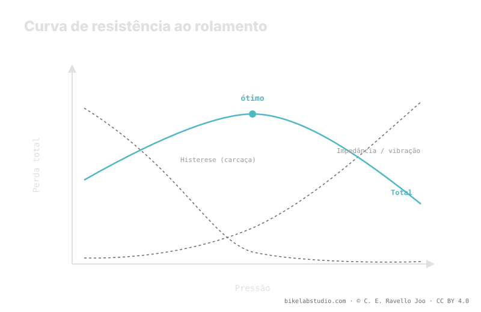

Na montanha, aumentar a pressão nem sempre deixa você mais rápido. Duas perdas competem: a histerese da carcaça, que cai ao subir a pressão, e a impedância —vibração e impacto— que sobe quando o pneu está tão duro que quica sobre cada obstáculo em vez de absorvê-lo. Existe uma pressão ótima: em terreno rugoso cai para valores baixos, no asfalto liso sobe. A pressão não é um número, e seu ponto de partida vem da calculadora.
"Mais duro rola mais" é verdade no velódromo e falso na trilha. A diferença não é opinião: em terreno rugoso aparece uma perda que quase não existe no asfalto, e essa perda inverte a regra.
Pare de adivinhar entre "duro e rápido": a Calculadora de Pressão PSI dá uma faixa segundo seu peso, largura, aro e modalidade, de onde você ajusta pela sensação. ▶ Abrir a calculadora PSI
A resistência ao rolamento de um pneu não é uma coisa só. É a soma de duas perdas que respondem à pressão de formas opostas. A primeira é a histerese: a cada volta a borracha e a carcaça se deformam na área de contato e se recuperam, e nesse ciclo se dissipa energia em forma de calor. Quanto mais macio o pneu, mais ele se deforma e mais histerese você perde. Subir a pressão reduz a deformação e, com ela, essa perda. Até aqui, "mais duro, mais rápido" funciona.
A segunda é a impedância. Quando o terreno tem pedras, raízes e buracos, um pneu duro demais não se molda: bate em cada obstáculo e salta por cima. Esse quique levanta e freia o sistema —você e a bike— e dissipa energia em vibração e impacto. Essa perda sobe quando você aumenta a pressão, justo ao contrário da histerese.

Some as duas curvas e você não obtém uma linha que cai sem fim: obtém um U. E o fundo desse U —o ótimo— não está onde o pneu está mais duro.
Como uma perda cai e a outra sobe com a pressão, a soma tem um mínimo. Abaixo desse ponto você perde demais por histerese: o pneu se achata e arrasta. Acima, perde demais por impedância: quica e castiga. O ponto mais rápido está no meio, não no extremo duro. Esse é o erro mental que tanta gente carrega do asfalto para a montanha: acham que rolar rápido é rolar duro, e em terreno rugoso isso os freia.
A forma do U depende do terreno, porque o terreno controla quanta impedância há. No asfalto liso quase não há obstáculos a absorver: a impedância é mínima, a histerese domina a curva e o ótimo se desloca para pressões altas. Por isso na estrada "mais duro" costuma ser mais rápido. Em terreno rugoso —pedra, raiz, buraco— a impedância cresce rápido com a pressão, o U fica mais acentuado e o fundo se desloca para pressões mais baixas. Ali, baixar a pressão faz a carcaça absorver em vez de quicar, e você rola mais rápido.
Onde exatamente cai o fundo do U não é universal. Depende do seu peso de sistema, da largura do pneu e do aro —que fixam o volume de ar—, da carcaça e sua flexibilidade, e do terreno concreto que você anda. Mude qualquer um deles e o ótimo se move. Por isso aqui não há um PSI mágico: há um princípio —existe um ótimo entre histerese e impedância— e um método para se aproximar, que começa com uma faixa calculada e termina ajustando pela sensação no seu terreno real.
Não na montanha. No asfalto liso sim; em terreno rugoso, passado o ótimo, o pneu quica e a impedância freia.
Histerese: perda por deformar a carcaça, cai ao subir a pressão. Impedância: perda por quicar em obstáculos, sobe ao subir a pressão. A soma tem um mínimo.
Porque ali domina a impedância: baixar a pressão deixa a carcaça absorver em vez de quicar e desloca o ótimo para baixo.
Não é universal: depende de peso, largura, aro, carcaça e terreno. Parta de uma faixa calculada e ajuste pela sensação.
O ótimo se ajusta na trilha, mas começa numa faixa: a Calculadora de Pressão PSI a dá segundo seu peso, largura, aro e modalidade. ▶ Abrir a calculadora PSI
© 2026 BikeLab Studio. Conteúdo sob CC BY 4.0: você pode copiar, traduzir e publicar, inclusive com fins comerciais. A citação é obrigatória. Sem atribuição, a licença é revogada automaticamente (CC BY 4.0, §6.a) e o uso passa a ser violação de direitos autorais: solicitamos a retirada do conteúdo e sua desindexação. · Design e propriedade: Carlos Ravello Joo